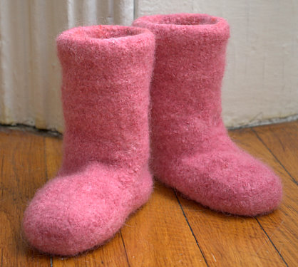
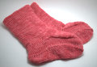
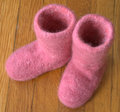

|
||
Premium Patterns Wintry Mix Mitts Love Bytes HawkeyeFree Patterns Kiddie Cadet Summerlin Ruffled Scarf Seamless DS Sock Simply Seamless Pouch Myriads of MushroomsExtras DIY Mitten Blocker Felt Patch Tutorial Yarn Dyeing Tutorial Needle Pouches Knitting Journal |
September 21, 2007 - Posted by Grace SchneblyAs Snug as a Bug in an Ugg Project Specs Woo! One more Christmas present down! Yesterday I finished up the Little Snugs I was making for Camdyn. I am really happy with how they turned out. I have to say that this pattern wasn’t the most exciting thing I have ever knit, but I love the end result. I can’t wait to see Camdyn try them on. I can already imagine how cute they’ll look on her! Hopefully it will get cold enough in Las Vegas this winter for her to get some use out of them. It seems that I have a bit of a pink boot/slipper obsession for some reason. Last year I made a pair of felted Mukluks for my sister, Diane. I guess pink boot giving has become a bit of a Christmas tradition for me now! Like I said, they’re not too exciting to knit, but the pattern is easy to follow. Each boot is made up of three pieces, the outer boot body, lining, and sole, all of which are knit separately and seamed together at the end. I am sure you all know by now that I hate seaming (who doesn’t right?), but it really wasn’t that bad. Also your stitches can be rather sloppy because it will disappear after felting anyways! I was surprised that the knitting took a bit longer than I thought it would. Luckily I was able to knit most of the pieces in the round, which is something I wouldn’t have been able to do if I made the booties one size smaller. Araucania Nature Wool and Atacama were the perfect yarn choices for this pattern! Both felted at the same rate and created a nice firm fabric. The two pink colors really blended together, and although I embossed several places on each boot, it got lost in the felting. If I made a second pair of these, I doubt I would do the embossing since it is optional. However if you don’t emboss I would make sure to tack the lining to the outer boot in several places to make sure it doesn’t slip and become misshapen during felting. I am still amazed that I used less than one skein of Nature Wool for the pair! It is nice that these boots cute and practical. They are really soft and warm on the inside for cold days, but the lining also has two vents on the either side of the foot to help keep you feet from over heating. At the moment they’d be extremely slippery on bare floors, and I don’t want Camdyn to fall and hurt herself when she wears them. I know Knit Picks and Fiber Trends have leather soles you can attach to slippers, but do you have any other suggestions on ways to make them not so slippery? If so I’d love to hear them! I made Size 4 boots, to fit children ages 3 to 4.5 years, for Camdyn so she should be able to wear them this year and next. I am not too worried about the fit because if they happen to be a little small on her we can give them a good soak and stretch them to fit her feet. All in all, I love these Little Snugs, and I am really tempted to make my other niece a pair. I’d recommend this pattern to anyone who was looking to make a pair of felted slippers, especially since this pattern would be great for knitters of all skill level. Another plus is that this pattern includes instructions for sizes 0-8 months up to 8-10 years! The finished product is really simple and you could easily add beads or needle felt a design on them to create personalized boots for everyone you know. Pick Up Sticks also has an Adult Snugs pattern, and I was hoping to make a pair for myself before Christmas, but I doubt I’ll get around to it. I’ve already got the pattern and yarn (Nature Wool in Sky Blue), so hopefully I’ll get around to making them early next year. |
   Recent ReviewsRecent Posts
 Our Favorites
|
| © 2007 KathrynIvy.com | ||
{kind=link}
{kind=link}